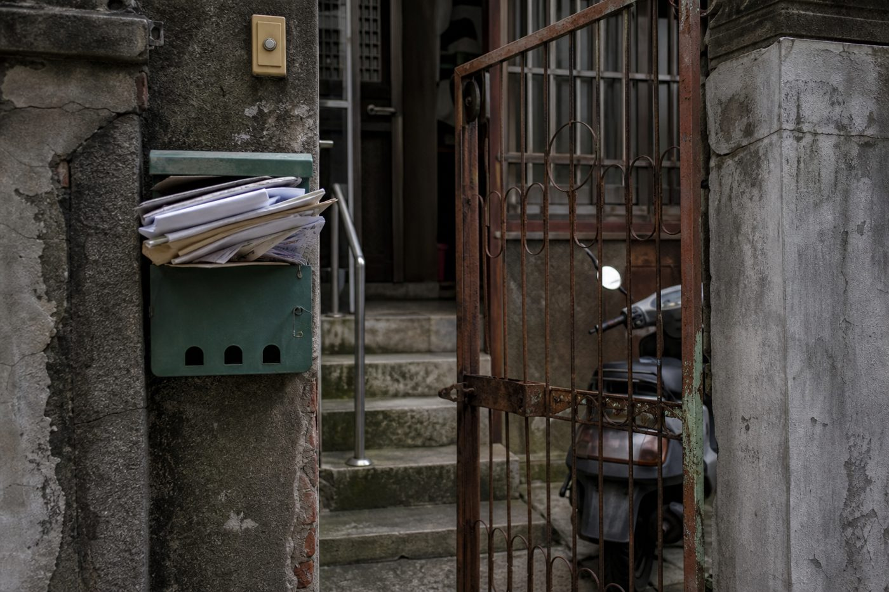

月付要跳 2 倍之前，你其實有很多牌可以打
這份自救包，把每張牌攤給你看
合作夥伴經手的真實個案，已去識別化。不是「借到多少錢」的故事，是「健檢之後，多出多少選擇」的故事

台南，房子在媽媽名下。弟弟長期負債，媽媽最怕自己走了以後房子被弟弟的債捲進去。夥伴幫他們做資產活化，第一步不是借錢，是把房子攤開檢查一次——流程跑到一半，銀行來電：「這間房子已經被查封了。」
查下去，兩個星期前就進入查封程序，全家沒人知道。原因是弟弟開媽媽名下的車，闖紅燈、違停、停車費未繳，罰鍰累積 7 萬多；媽媽戶籍還在老家，一張通知都沒收到，直接進強制執行。好在及早發現，款項與程序處理完，房子保下來，產權也重新安排好，弟弟再出狀況也影響不到這間房。
30 出頭、下個月結婚、婚後要備孕的女生，房子是媽媽 5 年逐年贈與來的。她聽完講座想貸 1,600 萬全部投進一家投資公司。夥伴多問一句「錢要用在哪」，沒幫她辦貸款，反而踩了煞車——最後她沒投，整份規劃重新調過。不到一個月，那家公司的司法案件爆發。
當時那家公司什麼事都還沒發生，她非常信任。夥伴反覆提醒三件事：合法嗎、有沒有主管機關監管、資金安全怎麼保，建議優先看受監理的金融商品。如果當初貸款順利，她會背著 1,600 萬房貸看著錢全部進去，結婚、休養、備孕的安排一起被拖下去。她後來重新做完規劃，現在已順利結婚，照原本安排在家備孕。
55 歲上校退伍，終身俸穩定，台南精華地段一間房，房貸只剩 300 萬。一輩子最怕欠銀行錢，積蓄全拿去還房貸。退休後 18% 優惠存款調整、孩子還在念書，現金流一緊，他跑去開計程車補家用。
夥伴花很長時間陪他重新理解「資產」：拚命還掉的房貸、漲上去的房價，全停在房子裡，沒有回來照顧生活。後來把退休收入、房屋價值、貸款、家庭開銷、風險保障與傳承一層一層排進規劃——不是單純借錢，每一層都先把風險算進去。完成後每月多出約 5 萬現金流，不用再開計程車，一家人重新能一起旅行、吃飯。
美容師創業開工作室，裝潢超支、周轉金沒抓夠，跟融資公司借了約 200 萬，每月光還款就要 8 萬多。兩個小孩、先生收入不高，夫妻天天為錢吵，一度談到離婚。
夥伴把狀況攤開整理後，去跟公公好好談了一次。公公願意用自己的房子協助，重新安排後月還款從 8 萬多降到約 1 萬，每月少掉 7 萬多的支出；公公自己的生活不受影響，還多出退休零用金。債還是要慢慢還，但家的狀態完全不一樣，現在一家 4 口能一起出遊。
銀行最怕的不是你繳不出來，是你轉走。所以「談」永遠是成本最低的第一步，開口前把下面清單跑完
轉貸不是只看利率差，下面每一項都是真金白銀，加總起來常常吃掉你第一年省的利息
| 項目 | 大約金額 | 怎麼查 |
|---|---|---|
| 提前清償違約金 | 貸款餘額 0.5%-1% （綁約期內才有） | 問原銀行「我的限制清償期到什麼時候」 |
| 塗銷＋設定規費 | 設定金額（通常是貸款 1.2 倍）× 0.1% | 800 萬貸款 → 設定 960 萬 → 規費約 9,600 元 |
| 代書費 | 約 6,000-12,000 元 | 含抵押權塗銷與重新設定，找代書前先問報價 |
| 銀行鑑價／手續費 | 0 到 10,000 元不等 | 很多銀行搶轉貸客會免收，直接開口問「能不能免」 |
| 火險地震險重投保 | 年繳約 2,000-4,000 元 | 轉貸要換受益銀行，原保單通常要重買 |
不用糾結，就三個問題